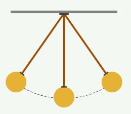
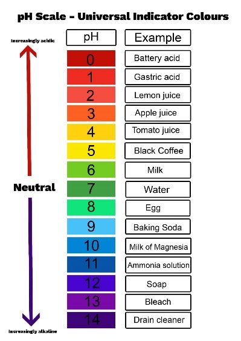
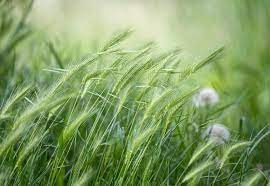
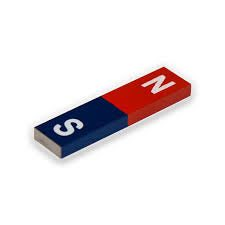

Background information
The "questioning and predicting" stage involves deciding on a clear question to ask, gathering background information to understand what is already known, and then deciding on a hypothesis that can be tested scientifically.
The background information is based on existing theory and published scientific investigations. Keep a record of your sources and acknowledge them correctly in a References list.
Activity: rank the background theory statements
A pendulum is a weight hung from a point so that it can swing freely. Below are three background theory statements for an experiment on a simple pendulum. Read each one and rank them on quality using the rubric. For the 2nd and 3rd ranked statements, explain how they could be improved.

| Rubric: background theory | 3 | 2 | 1 | 0 |
|---|---|---|---|---|
| Introduction to experiment | All relevant theory, data, values and equations provided. Citations required. | Most relevant theory, data, values and equations provided. | Basic with minimal information. | Not shown or significant errors. |
Rank each background information statement (1 = best).
Background information 1:
Background information 2:
Background information 3:
Statement 2 is best: it explains the theory, gives the equation, explains what the equation means (including that mass has no effect), defines every variable with units, and cites its sources.
Statement 3 is second: it has the equation and some definitions, but doesn't explain the equation or define T, L and g, has no citations, and includes irrelevant history.
Statement 1 is weakest: it has no equation, no data or values, no definitions with units and no references.
For the statements you ranked 2nd and 3rd, list what they need to do to improve.
Statement 3: explain what the equation means (T is proportional to √L; mass and amplitude don't affect the period for small swings); define T, L and g with their units; give a value for g (9.8 m/s2); add in-text citations; remove the history that isn't relevant to the experiment.
Statement 1: add the equation T = 2π √(L / g) and explain the relationship; define the period, length and g with units; include known values (g ≈ 9.8 m/s2); state that mass doesn't affect the period; add citations to published sources.
Research question
A research question is better than an aim, because it clearly links the factor being investigated to the factor being measured.
The basic research question takes the form:
Other options (depending on context) include "What factors affect ...?" and "How does ... change over time?"
Activity: write research questions
Write a research question for each experiment.

What is the effect of distance from the source of the river on the pH level of the water?

What is the effect of soil type on the germination rate of rye grass?

What is the effect of distance from a bar magnet on the strength of the magnetic field measured by the sensor, which indicates the strength of the magnet?
Hypothesis
A hypothesis is an educated guess based on prior knowledge and observations. A good hypothesis includes an explanation of why the guess may be correct. It must be scientifically testable and allow a fair experiment.
Bad and good hypotheses (examples from the slides)
| Bad | Good | Reason |
|---|---|---|
| Plants will grow better when given Miracle Grow fertiliser. | Plants will grow taller when the amount of Miracle Grow fertiliser is increased. | Avoid "better"; specify what changes for each variable. |
| Girls are smarter than boys. | Girls will score higher than boys when standardised testing is used. | Specify which variable is being measured. |
| Hermit crabs like colourful shells. | Hermit crabs will choose colourful shells more often than plain shells. | Avoid "like"; be specific about the alternatives. |
| Ball A out-performs Ball B. | If Ball A is used instead of Ball B, the rebound height is higher. | Make observations objective. |
The "good" examples are specific, testable and relate the IV and DV without bias.
Do some research and write a hypothesis for each of the three experiments above (river pH, rye grass germination and magnet strength). Include all the requirements of a good hypothesis.
Example hypotheses (yours may differ but should be specific, testable and include reasoning):
1. If the distance from the river's source increases, then the pH of the water will decrease (become more acidic), because the river collects more industrial discharge and agricultural runoff as it flows downstream.
2. If rye grass seeds are planted in potting mix instead of sand or clay, then the germination rate will be higher, because potting mix holds more water and nutrients and allows air to reach the seed.
3. If the distance between the magnet and the sensor increases, then the strength of the magnetic field measured will decrease, because the magnetic field spreads out and weakens rapidly with distance from the magnet.
Questions
Which of the following research questions is most likely to lead to a successful scientific investigation?
It names a measurable independent variable (CO2 concentration) and dependent variable (global temperature).
What is a crucial characteristic of a research question that aligns with the scientific method?
Which of the following statements best represents a testable hypothesis?
Which of the following does not need to be included when writing the background theory for an investigation?